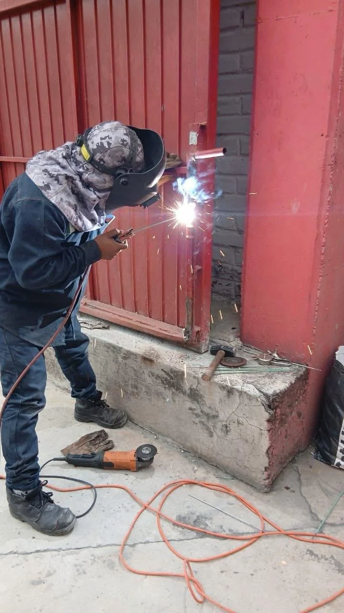
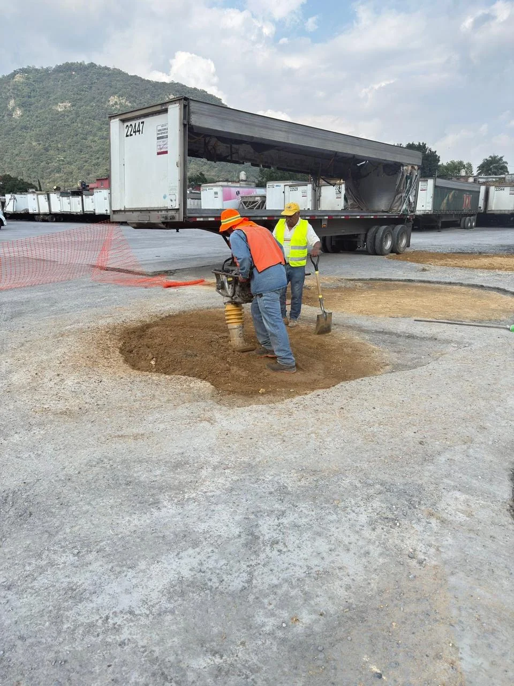
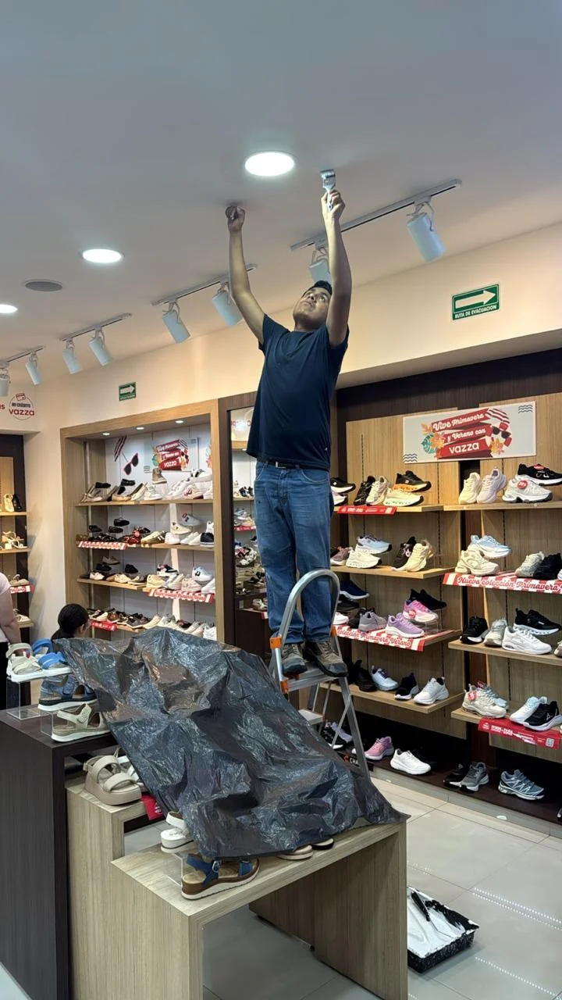
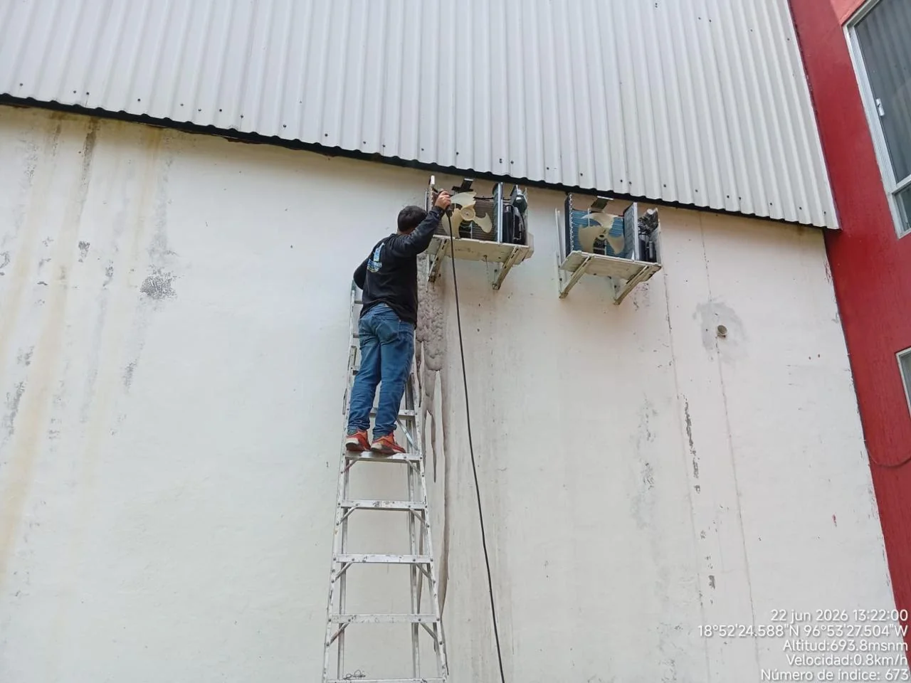
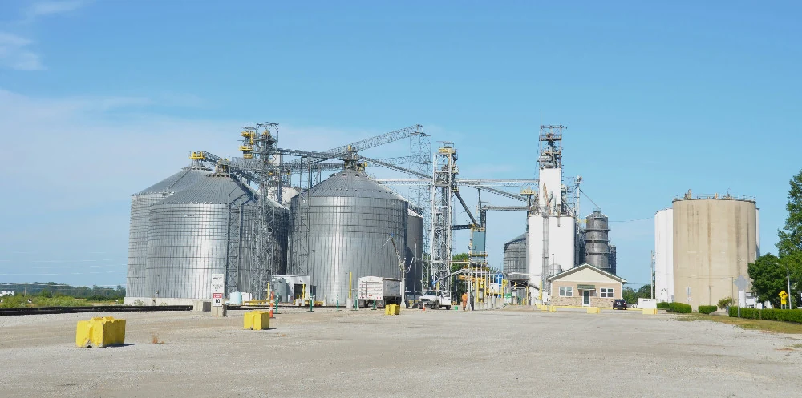
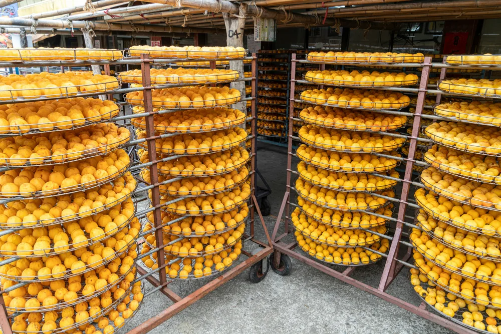
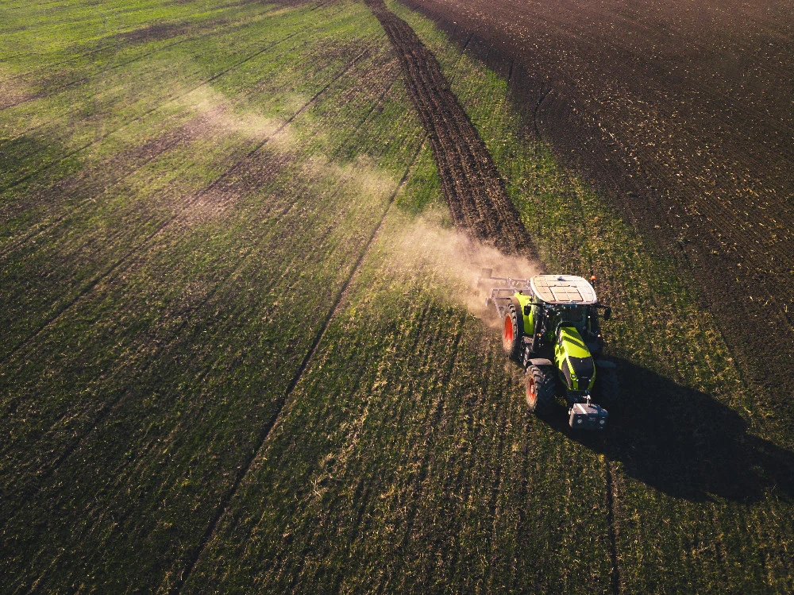
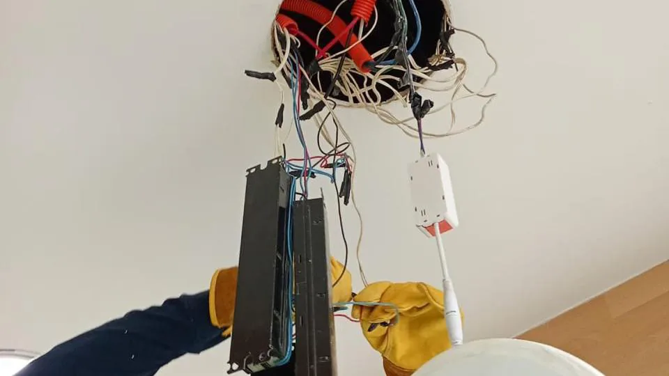
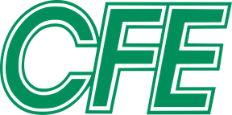

Fabricación, intervención y montaje de piezas, tolvas, cabinas y tuberías especializadas.
Ver especialidad
Soluciones mecánicas, eléctricas, de fabricación y mantenimiento para instalaciones industriales y comerciales.
En Ingeniería y Servicios Camarillo reunimos experiencia en mantenimiento industrial, fabricación y adecuación de infraestructura. Nuestro trabajo se desarrolla en plantas, instalaciones y espacios comerciales.

De fabricación y soldadura a conservación de instalaciones: selecciona un área para conocer sus trabajos y alcances.
Fabricación, intervención y montaje de piezas, tolvas, cabinas y tuberías especializadas.
Ver especialidad
Intervenciones de soldadura en piezas, elementos metálicos y estructuras.
Ver especialidad
Remodelación de espacios, trabajos constructivos y adecuaciones de infraestructura.
Ver especialidad
Intervenciones en instalaciones, luminarias y equipos eléctricos de espacios operativos.
Ver especialidad
Conservación de fachadas, adecuación de interiores y acabados en establecimientos.
Ver especialidad
Atención a equipos de aire acondicionado en instalaciones comerciales e industriales.
Ver especialidadConoce proyectos documentados de ISC por tipo de instalación. Selecciona un sector para explorar su trabajo.

Sustitución y soldadura de placas en un precalentador de horno, además de trabajos electromecánicos documentados en planta.
Explorar caso Holcim
Instalación de tubería para enfriador, fabricación de estructuras y montaje de componentes de acero inoxidable.
Explorar caso Novohielo
Proyecto de aglomerador con excavación, cimentación y estructura de cinco niveles, documentado en el perfil corporativo.
Explorar caso CAFINCO
Trabajos documentados de señalética, luminarias, tablaroca y pintura en establecimientos comerciales.
Explorar caso VazzaTrabajos extraídos del currículum empresarial de ISC, presentados con su alcance y fotografías originales.
Empresas e instituciones incluidas en el perfil corporativo de ISC.
Conoce a nuestros clientes Flexi
Flexi Novohielo · Grupo Montosa
Novohielo · Grupo Montosa Bonafont
Bonafont Alimentos San Cayetano
Alimentos San Cayetano Cafetalera El Carmen
Cafetalera El Carmen Alimentos Ochoa
Alimentos Ochoa CAFINCO
CAFINCO Holcim México
Holcim México Nacional Monte de Piedad
Nacional Monte de Piedad
CFE IMSS
IMSSExplora fotografías reales de obras, instalaciones y especialidades, organizadas por proyecto y tipo de trabajo.
Explorar galeríaCuéntanos el alcance del trabajo. Podemos revisar tu requerimiento y preparar una cotización.
Solicitar cotización